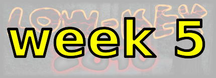
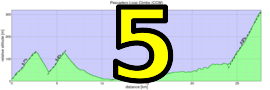

|
 |  |
| Results are closed! |
| New: If you uploaded your ride data < 3 pm on Saturday, it may not have been successful. You may want to try again. |
| results? | right here! |
| profile |  |
| distance | 4.85 miles (7.8 km) |
| climbing | 1450 ft (441 meters) |
| grade | 5.67% |
| stats | Stage 1: 2.65 km, 119 m (4.5%) Stage 2: 1.60 km, 87 m (5.4%) Haskins: 3.68 km, 241 m (6.5%) total: 7.85 km, 447 m (5.7%) |
| where? | see below |
| when? | 29 Oct 2016 |
| what time | no registration needed climb starts @ 10 am, or any time Saturday |
| Result | Results are closed |
| how? |  |
| how much? | free! |
| why? | Ask not why; just do! |
| coordinator | |
| volunteers | sign up! |
| weather | Bay area winds |
| links | Map of 1st Stage Timed Section Map of 2nd Stage Timed Section Map of Haskins Timed Section Strava for Stage #1 Strava for Stage #2 |
| deja-vu? | New! |
| route map (look here!) | |
Sorry, folks! Our insurance requires all riders wear helmets during the climb, and we follow the USA Cycling rule against ear buds or other head phones. Rock to tunes before the climb, perhaps, but we need riders to pay attention to what's happening during the climb...
This is a self-ride week, so you're on your own! An excellent way to the course from the peninsula is by bike! Just cruise on down Highway 84 out to San Gregorio and, presto-magicko, you're warmed up and ready to hammer! But if you really want to drive, there's parking in the area of San Gregorio We just ask that you do not park at San Gregorio store: that parking is short-term customer parking only. I know: the instant I say don't park there you're thinking "gee; it might be a good idea to park at the San Gregorio store!" Please, just don't. We want the store to have only warm fuzzy feelings about Low-Key, not bitterness and resentment.
An alternative is to park in Pescadero, then ride the Stage climbs to the start for warm-up. So many options!
Note the climb of Haskins starts soon after passing Wurr Road, at the Camp Loma Mar entrance. Examine the RideWithGPS map for where the timing will begin. Start riding hard before hitting the intersection with the entrance. You don't want to have GPS errors result in your data crossing the line while you're doodling.
Timing this week is based on the time taken to climb the three climbs. The start and finish of the climbs are noted on the map, as well as on maps linked in the table (see Timed Section links). You have 45 minutes to get from the top of the first Stage climb to the bottom, then 45 minutes to get from the top of the second Stage climb to the bottom, then a generous 1:40 to get from there to the based of Haskins. These time limits work out to 40 minutes plus riding the distance at approximately 20 kph (12 mph). So there's plenty of time to repair a flat, or wait for a friend, etc, but don't dally too long. The intent is the three climbs be ridden together as part of the same ride.
This is a self-timed week, so we won't have check-in and results. However, there's still volunteer options! You can volunteer to help using our volunteer form! Thanks!!!
Low-Key is all about a group of friends riding up a hill together. It's like any other informal group ride, except we time you to the top and report the results on our web site. But we have no road closures, no lead vehicle, no follow vehicle. We are traffic, sharing the roads with other traffic, following the laws and courtesy which applies to traffic. This includes riding to the right of the road when practicable, and not crossing double yellows to pass riders or to get through corners faster. We're each responsible for our own actions out there, on and off the bike, both as users of the road as as courteous visitors to the neighborhoods we pass through. "Ceci n'est pas un race".